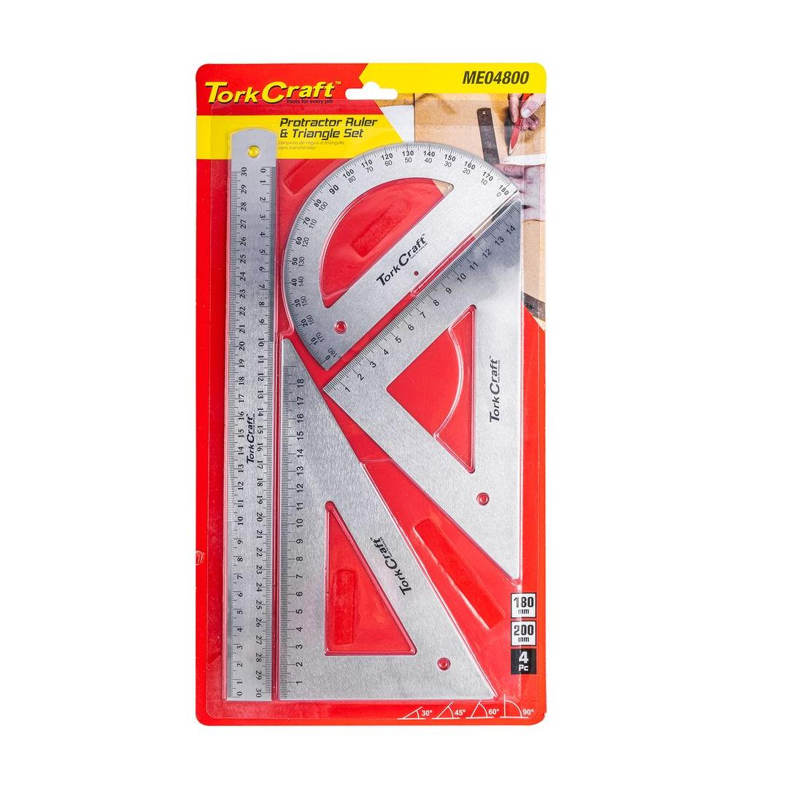
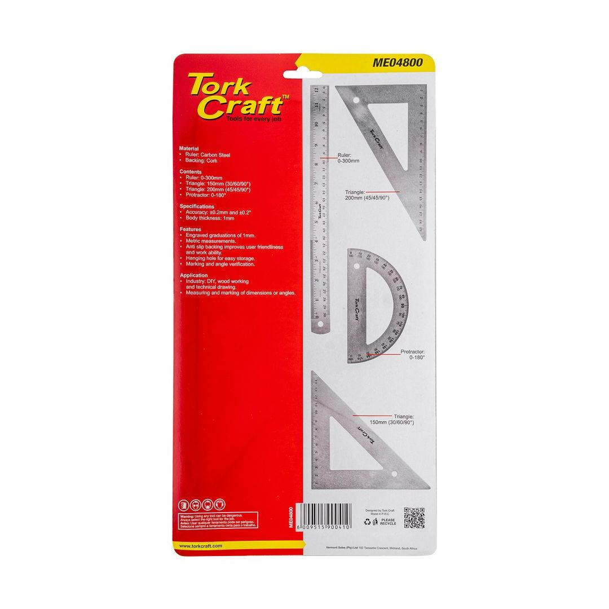

ME04800
330.05


Thickness: 1mm
Content: Straight, Protractor, 2x Triangular Ruler
Expand your collection with the Protractor & Triangular Ruler Set and measure to new lengths. The cork on the back provides a sturdy and stable base, preventing the ruler from sliding or shifting while you&re working.
Protractor Ruler:
A protractor ruler is a combination tool that serves both as a protractor and a ruler. One side of the ruler features a semicircular scale marked with degree measurements from 0 to 180. This allows you to measure and draw angles accurately. The other side is a straight edge with linear measurements (usually in centimeters and inches) for measuring lengths.
Triangular Ruler:
A triangular ruler is a specialized measuring tool shaped like a triangle. It&s commonly used in technical drawing, architecture, and engineering. The three sides of the triangle are often marked with different angles, such as 30°, 60°, 90° and 45°, 45°, 90°. These angles allow for precise measurements and drawing of objects at different sizes.
Straight Ruler:
A straight edge ruler can be used in many industries. It is an essential measuring tool in the woodworking, machinist and technical draughting environments.
Application: